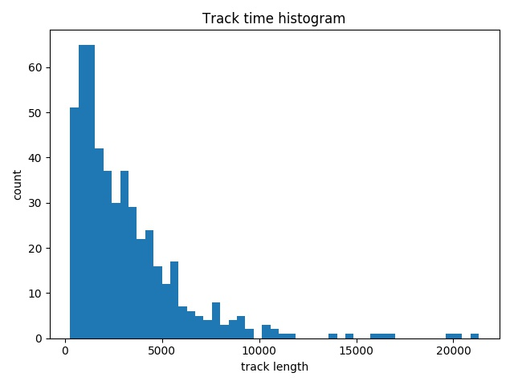
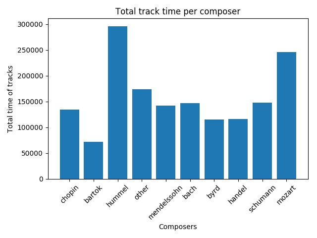
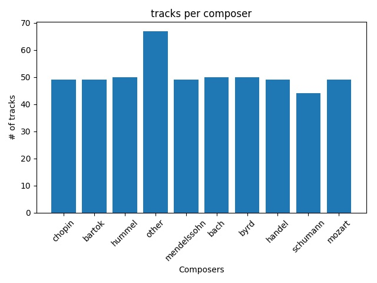
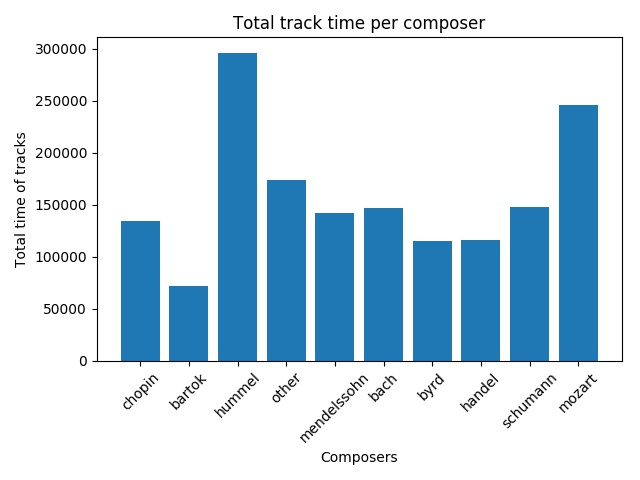
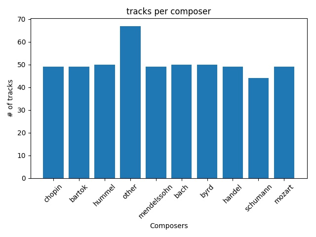

Music Composer Classification
Amr Mohamed Nasreldin Elsayed
Michael Raafat Mikhail Zaki
Problem Statment
Where words fail, music speaks.
That’s why music is so interesting and why People love to listen to music coming from specific person. We decided to classify music according to composers, we will receive the music and select the composer that most likely composed this music piece from 9 composers or a class of others. This problem is much harder than genre classification due to its complexity, however, logically its models can be generalized to help in other music classifications tasks.
Our project was based on the stanford project completed in fall 2018. This project report can be found here. Differences between our approaches are that we introduced a class of others that wasn't available in the original project, and that we classify on 30 second intervals only while they considered the interval size to classify to be a hyperparameter that can be tuned allowing them more flexibility.
Input/ output Example
Our input is a midi file. A midi file, which contains tracks and chords represented as a tensor with dimensions of #tracks, #notes, #time which we will use in our models for classification. While we can take any midi files with the length of more than 30 seconds, our models work on classifying 30 seconds intervals of music. The input dimensions are 1 track, 128 musical note, and 30 second.
Our output is the label of the artist who composed this segment. It can be one of the following composers : 'chopin', 'bartok', 'hummel', 'mendelssohn', 'bach', 'byrd', 'handel', 'schumann', 'mozart' or 'other' if it doesn't match any composer.
Gantt chart
Dataset
We obtained the original dataset from the original stanford report repository, which was a collection of 443 classical songs in midi formats for each of the 9 composers, with about 50 tracks per composer. However, we also added a collection of other midi files to represent the class of others in our project. We added 67 tracks to the dataset to represent our others class which included the work from composers such as Beethoven, Clementi and Haydn. These tracks were obtained from here.
 



We can see from early exploration that while the number of tracks is almost balanced between different classes, the total time of the tracks is majorly unbalanced and would need to be balanced to obtain better results. We can also see that the tracks are not uniquely distributed in their length by a composer, and that most of our tracks will contain at least 30 second of music. Note that the track length is transformed to time by checking the sampling frequency. In our case the sampling frequency was 10, so each 10 track length units represent 1 second.
State of the art
The state of art performance reported in the original stanford report referenced in the problem statement section is 58% achived by a CNN architecture.
Data pre-processing(If Applies)
- We used the pretty midi python library to parse and act as a wrapper to the midi files.
- We extracted from each midi file its piano roll with a sample frequency of 10, the piano roll is a matrix representing the volume of each musical note across the different timesteps flattend across instruments.
- We filtered any tracks that are less than 30 second.
- We separated our dataset to training, validation and testing with 70%, 15% and 15% respectively.
- We augmented the separated dataset using a window approach, taking multiple random windows of 30 second from each track(normally 60 from each track),which helped as balance the dataset since the tracks number were almost balanced already

Model(s) Used
- Batch normalization was used after each layer
- If dropout was applied, it was applied on the dense layers only
- If L1 or L2 regularization was applied, it was applied on all layers
- Input to Dense layers is always flattened before it goes to it
- Default convolutional kernel size is 3x3
- Adam optimizer with 0.001 learning rate, beta 1 with value 0.9 and beta 2 with value 0.999 were used as default optimizer
| None Model (Used to test pipeline) |
|---|
| Layer |
| Dense 10 unit with softmax activation |
| Pure_CNN Model |
|---|
| Layer |
| Conv2D with 16 filters with relu activation |
| Conv2D with 32 filters with relu activation |
| Max pooling |
| Conv2D with 64 filters with relu activation |
| Conv2D with 128 filters with relu activation |
| Max pooling |
| Conv2D with 256 filters with relu activation |
| Conv2D with 512 filters with relu activation |
| Max pooling |
| Dense 128 unit with relu activation |
| Dense 10 unit with softmax activation |
| Big_CNN Model |
|---|
| Layer |
| Conv2D with 16 filters with relu activation |
| Conv2D with 32 filters with relu activation |
| Max pooling |
| Conv2D with 64 filters with relu activation |
| Conv2D with 128 filters with relu activation |
| Max pooling |
| Conv2D with 256 filters with relu activation |
| Conv2D with 512 filters with relu activation |
| Max pooling |
| Conv2D with 1024 filters with relu activation |
| Max pooling |
| Conv2D with 2048 filters with relu activation |
| Max pooling |
| Dense 128 unit with relu activation |
| Dense 10 unit with softmax activation |
| Moderate_CNN Model |
|---|
| Layer |
| Conv2D with 16 filters with relu activation |
| Conv2D with 32 filters with relu activation |
| Max pooling |
| Conv2D with 64 filters with relu activation |
| Conv2D with 128 filters with relu activation |
| Max pooling |
| Conv2D with 256 filters with relu activation |
| Max pooling |
| Dense 128 unit with relu activation |
| Dense 10 unit with softmax activation |
Fine Tuning applied
CNN Models
| Model | Train loss | Train accuracy | Validation loss | Validation accuracy | Notes |
|---|---|---|---|---|---|
| Pure_CNN Model | 0.0015 | 99.99% | 1.2615 | 76.80% | None |
| Pure_CNN Model | 0.1959 | 93.75% | 1.5233 | 67.48% | Dropout with probability 50% |
| Big_CNN Model | 0.0233 | 99.36% | 1.0968 | 73.88% | None |
| Moderate_CNN Model | 0.0839 | 98.18% | 5.2852 | 24.81% | Dropout with probability 10% |
| Moderate_CNN Model | 10266.6516 | 34.22% | 326612.1782 | 16.64% | L2 Regularization with 0.001 penalty |
| Moderate_CNN Model | 4.6925e-04 | 100% | 1.0182 | 77.50% | Convolution kernel size changed to 5x5 |
| Moderate_CNN Model | 2.1066e-04 | 100% | 1.0730 | 77.79% |
|
| Moderate_CNN Model | 0.0405 | 98.90% | 2.7380 | 52.33% |
|
Moderate_CNN Model with convolutional kernal sizes of 5x5 and learning rate changed to 0.0008 was chosen to be the model to be evaluated by our test set
Results
We applied a voting technique to boost results, by taking multiple windows from each testing sample and checking the majority voting on the windows of a sample. We review our results by test accuracy on single segments and by checking accuracy on whole tracks by voting.
| Model | Test loss (Segment) | Test accuracy (Segment) | Test loss (Voting) | Test accuracy (Voting) |
|---|---|---|---|---|
| None Model | 12.670327808533246 | 20.684005732959151% | 6.7333126 | 26.82927% |
| Moderate_CNN Model | 0.9514614451127656 | 80.79268292682927% | 0.6717078 | 90.2439% |